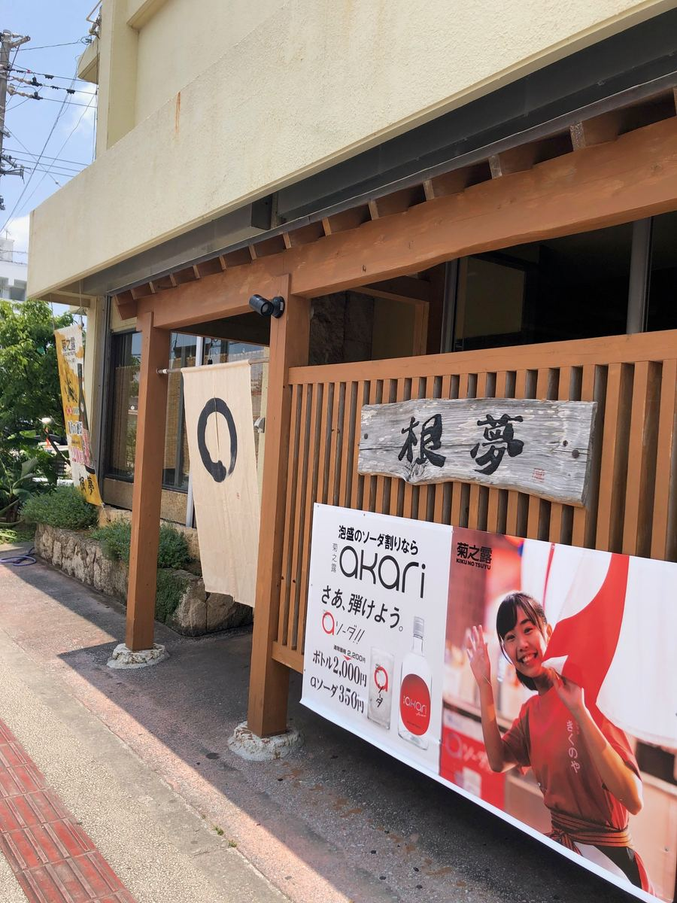
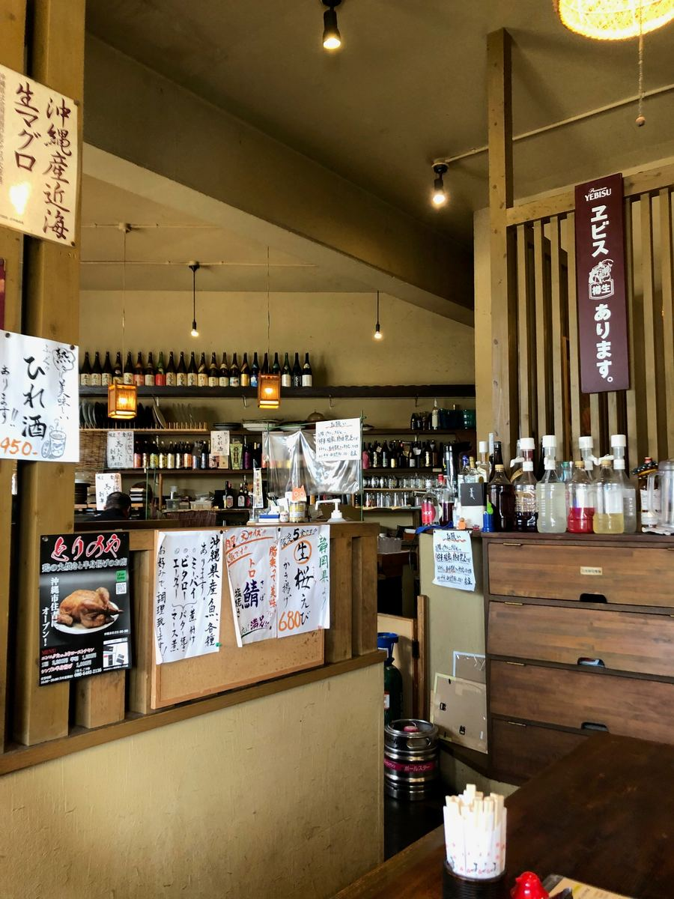
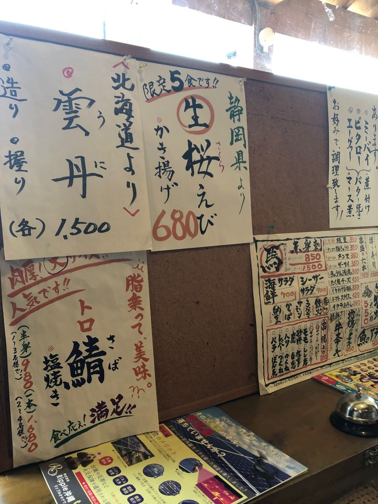
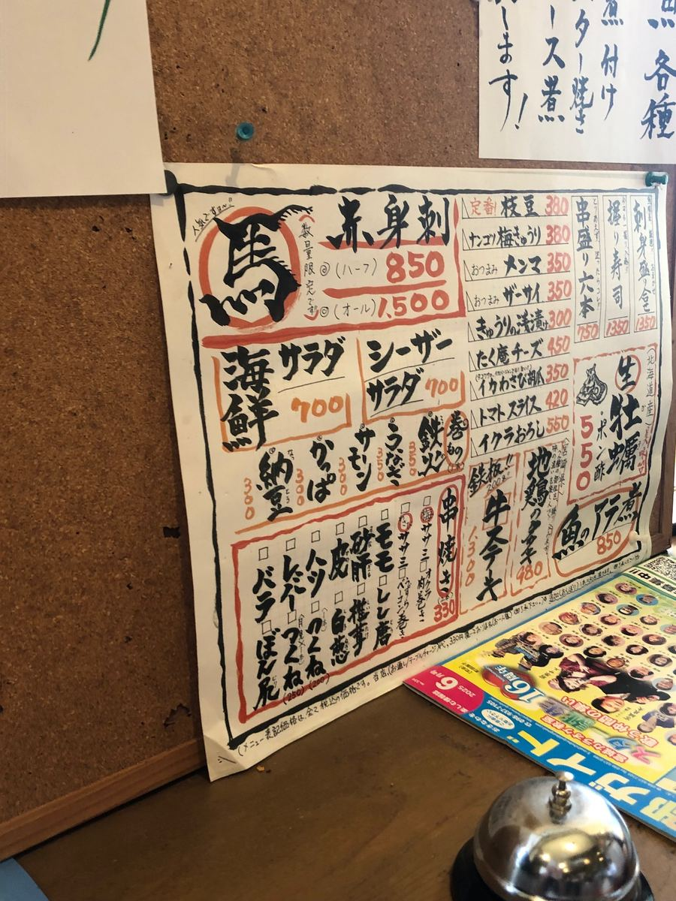
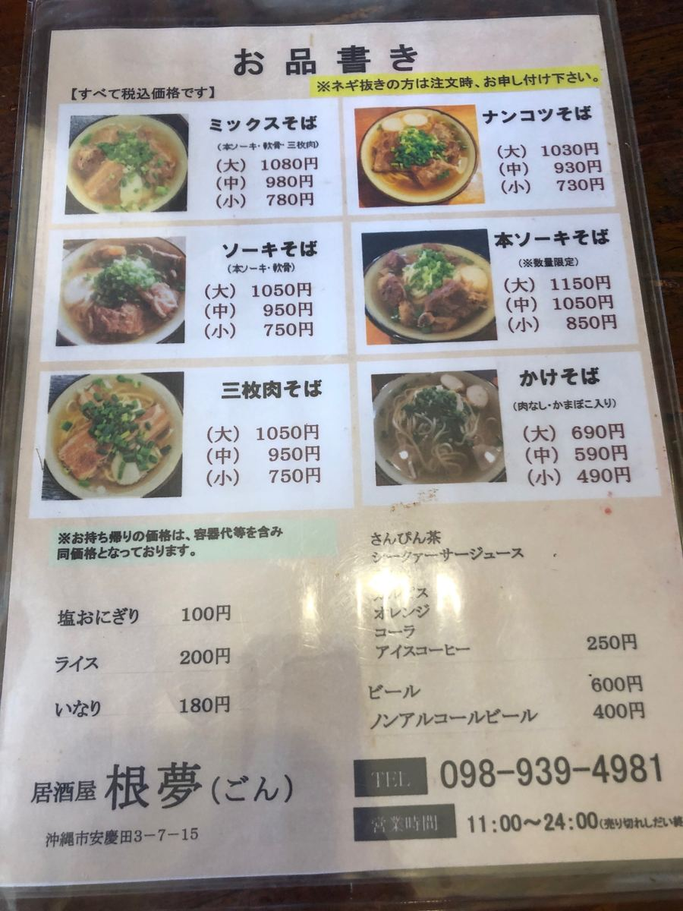
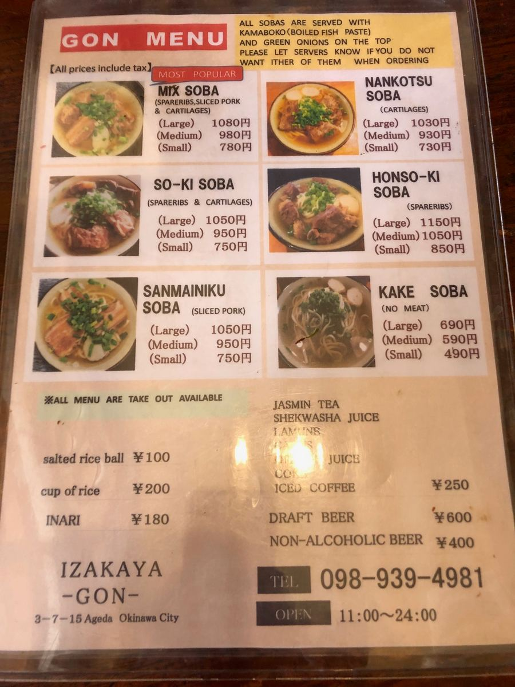
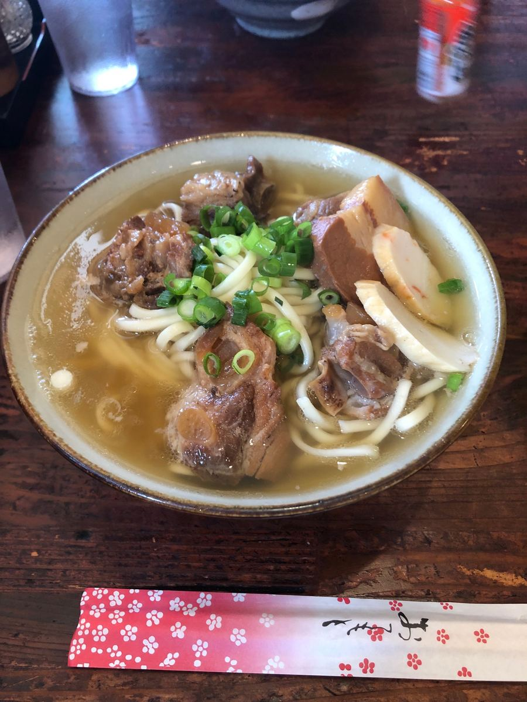
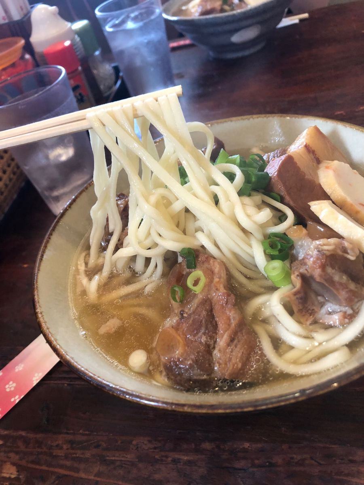

오키나와 소바 순례 여행, 이번에는 오키나와시 아게다에 있는 “곤(根夢)”에 다녀왔어요🍜

이곳은 낮에는 오키나와 소바, 밤에는 이자카야라는 두 간판을 내건 가게예요. 그래서인지 가게 안은 이른바 오키나와 소바 전문점이라기보다 이자카야 한켠에서 소바를 먹는 듯한 분위기랍니다😄

방문했을 때는 현지 손님들로 꽤 북적이고 있었어요. 관광객용이라기보다 지역에 뿌리내린 한 곳이라는 느낌이라, 이런 가게에 들어갈 수 있으면 조금 기쁘죠😊


메뉴를 보고 이번에는 고명이 푸짐한 “믹스 소바”를 주문했어요. 뼈 있는 돼지갈비(혼소키) · 연골 돼지갈비(난코츠 소키) · 삼겹살 조림(산마이니쿠)이 전부 올라간 욕심 가득한 한 그릇이네요🤤


나온 믹스 소바가 이것. 세 종류의 고기가 듬뿍 올라가 있어서 꽤 박력이 있네요✨

우선 국물부터. 가쓰오 육수가 확실히 우러난 맛입니다.
면은 중간 굵기의 느슨한 스트레이트 타입. 부드럽게 마무리되어 있어요🍜

그리고 주인공인 전부 올린 고명. 뼈 있는 돼지갈비(혼소키) · 연골 돼지갈비(난코츠 소키) · 삼겹살 조림(산마이니쿠) 각각 적당히 간이 되어 있어서 맛있는데, 모두 힘줄 같은 질긴 식감이 꽤 있었어요^^;
연골 돼지갈비(난코츠 소키)는 부드럽게 푹 조린 타입이 아니라 단단하고 오독오독한 식감이라, 이것대로 씹는 맛이 있어서 호불호가 갈릴 것 같네요😋
전체적으로 이자카야에서 내는 오키나와 소바다운, 어깨에 힘을 뺀 평범하게 맛있는 한 그릇이었어요. 현지에서 북적이는 것도 납득이 갑니다😄 밤에는 이자카야로서 한잔하며 마무리로 소바, 같은 즐기는 방법도 가능할 것 같네요🍶
평가(9점/15점): 가쓰오 육수가 우러난 담백한 국물에 부드러운 중간 굵기 스트레이트 면. 뼈 있는 돼지갈비(혼소키) · 연골 돼지갈비(난코츠 소키) · 삼겹살 조림(산마이니쿠)이 전부 올라가서 먹는 맛은 충분하네요. 지역에서 사랑받는, 이자카야에서 시작된 꾸밈없는 한 그릇이었어요😊
면: ★★★☆☆（3）
수프: ★★★☆☆（3）
토핑: ★★★☆☆（3）